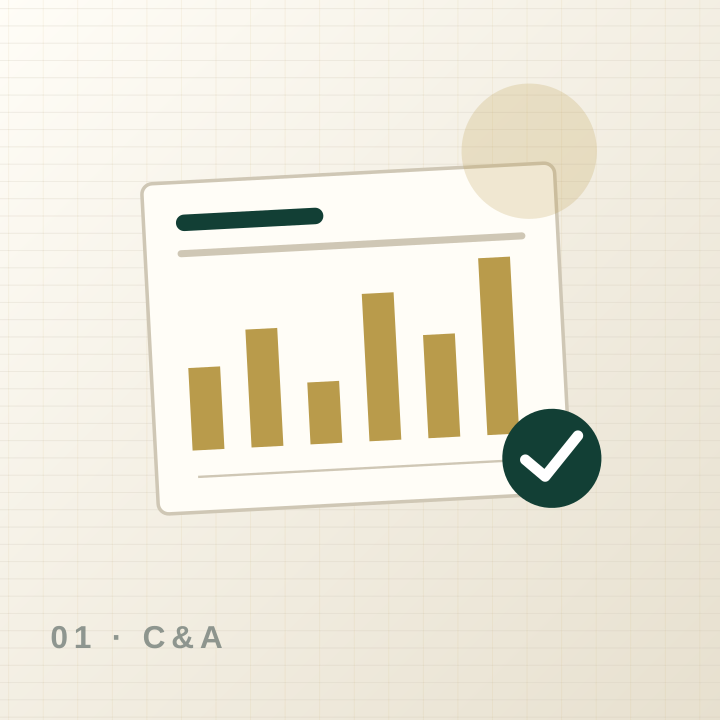
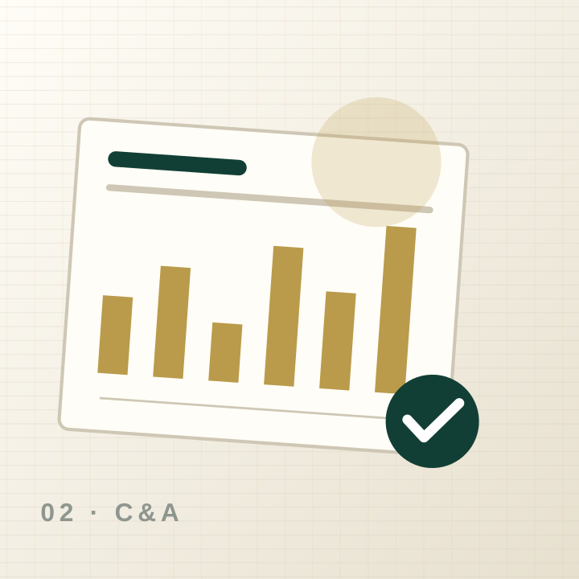

Auditoría y aseguramiento
Enfoque basado en riesgos, evidencia y comunicación ejecutiva.
Firma de auditoría, outsourcing contable y asesoría tributaria, societaria, laboral, NIIF, PLA/FT, financiera y legal.
Audicontax integra auditoría, contabilidad, impuestos, legal y cumplimiento en una plataforma que informa, capacita y permite a clientes gestionar requerimientos y consultas.
La arquitectura responde a la descripción del alumno, no a una plantilla genérica.
Enfoque basado en riesgos, evidencia y comunicación ejecutiva.
Procesos contables, tributarios y laborales organizados.
Análisis técnico y acompañamiento preventivo.
Diagnóstico, implementación, reportes y análisis.
Ilustraciones vectoriales locales, rápidas y editables. No dependen de bancos externos.

Enfoque basado en riesgos, evidencia y comunicación ejecutiva.

Procesos contables, tributarios y laborales organizados.

Análisis técnico y acompañamiento preventivo.
Cada etapa define qué ocurre, qué recibe la persona y cuál es el siguiente paso.
Actividad, obligaciones, riesgos y objetivos.
Alcance, requerimientos, responsables y calendario.
Evidencia, revisión, consultas y seguimiento.
Informe, recomendaciones y plan de acción.
Contenido estructurado para personas, buscadores y motores de respuesta.
El prototipo define la arquitectura. En producción requiere fuentes oficiales, responsables editoriales, fechas de vigencia y control de versiones.
No. Resuelve orientación básica con citas a la biblioteca; asuntos relevantes deben escalarse a un profesional.
La versión productiva debe incorporar autenticación, cifrado, roles, auditoría y políticas de retención antes de recibir documentos reales.
El diseño ya contempla contenido, navegación, accesibilidad, metadatos, respuestas directas y estructura técnica. Las integraciones reales se conectan con credenciales del negocio.